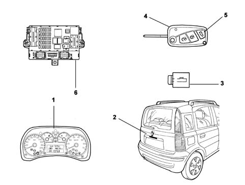

7005N front door central locking system
- Path
- Descriptions > 70 FITTINGS > 7005 PASSENGER COMPARTMENT FRONT SIDE DOORS > 7005N front door central locking system
- Kind
- system description
- Applies to
- all engines; all production periods
- Interactive page
- https://sloeber94.github.io/elrnDB-fPnd/en/#/2750978
Applies to: all engines; all production periods
There are three door opening/closing systems on the Fiat Gingo:
Applies to: all engines; all production periods
MECHANICAL DOOR OPENING/CLOSING
The key used is a coded desmodromic type which matches the car's lock pawls.
The key allows the locking/unlocking of the doors and opening of the tailgate from outside the vehicle by means of the pawl present on each of the front doors and the tailgate.
Applies to: all engines; all production periods
OPENING/CLOSING DRIVER'S DOOR AND PASSENGER'S DOOR
There is a pawl on the driver's and passenger's door handles which, by means of the mechanical key, enables the individual door to be locked/unlocked.
Applies to: all engines; all production periods
OPENING/CLOSING TAILGATE
This happens by inserting and rotating the key in the specific pawl on the handle. This will allow the tailgate to be released and then opened.
For closing, simply push the tailgate into the closed position.
Applies to: all engines; all production periods
LOCKING/UNLOCKING DOORS FROM CAR INTERIOR
On the internal trim of all the doors, there is a push-pull handle for manually controlling the locking of the individual door from inside the interior compartment.
Applies to: all engines; all production periods
ELECTRIC OPENING/CLOSING WITH KEY
The system allows the locks on all the doors to be controlled, except for the tailgate.
Applies to: all engines; all production periods
OPENING/CLOSING DOORS FROM THE OUTSIDE
The door locks can be locked/unlocked centrally by insertign the key in the pawl present only on the driver's door, and turning it.
Locking is indicated by the position on the internal handle (push-pull type), positioning it on each door.
If the locking of a door is requested and one or several doors are open, repulsion takes place and the doors remain unlocked.
Applies to: all engines; all production periods
OPENING/CLOSING TAILGATE
The opening/closing of the tailgate is mechanical and takes place by the insertion and rotation of the key in the specific pawl on the handle. This will allow the tailgate to be released and then opened.
For closing, simply push the tailgate into the closed position.
Applies to: all engines; all production periods
LOCKING/UNLOCKING LOCKS FROM INSIDE
When the internal handle on the driver's door is pressed, all the doors are locked centrally.
If a handle on another door is operated, that individual door is locked locally.
If a front door handle is operated with the door open, the mechanical action is not carried out and the door cannot be locked: this prevents the keys being accidentally locked manually inside the car.
When the internal handle on the driver's door is pulled, all the doors are unlocked centrally.
Applies to: all engines; all production periods
ELECTRICAL OPENING/CLOSING WITH REMTE CONTROL
The system enables the locks on all the doors and tailgate to be controlled.
Applies to: all engines; all production periods
RADIOFREQUENCY REMOTE CONTROL AND RELEVANT FUNCTIONS
The system for central opening/locking the doors and tailgate uses a radiofrequency remote control capable of operating at a distance of up to 20 metres from the car (with free field).
The remote control comprises:
- mechanical insert (key);
- 3 control buttons;
- an indicator LED.
The control buttons are dedicated to:
- unlocking doors and tailgate, with a single short press; at the same time the courtesy light comes on for a fixed time and the direction indicators flash twice to confirm the event;
- locking doors and tailgate, with a single short press; at the same time the courtesy light goes out and the direction indicators flash once to confirm the event;
- opening tailgate, with a long press (over 1 second) because the action must be voluntary and not accidental, the tailgate is released; at the same time the direction indicators flash twice to confirm the event.
After being opened, when re-closed, the tailgate returns to its previous state:
- If the car was unlocked, the tailgate returns to the unlocked state;
- if the car was locked, the tailgate returns to the locked state, in line with the door status.
Applies to: all engines; all production periods
OPENING TAILGATE BY SOFT TOUCH ELECTRICAL HANDLE
Coupled with the remote control, there is a soft-touch electrical handle on the tailgate handle, near the number plate light.
This handle can be operated when the tailgate is in the released state (the tailgate is automatically released when the doors are unlocked centrally).
In this situation, the electric handle is enabled and it is then possible to open the tailgate by operating it; the lock disengages, releasing the tailgate so it can be lifted.
When the tailgate is instead in the locked state (the tailgate is automatically locked when the doors are locked), the tailgate cannot be opened by the electric handle and so the tailgate will remain closed.

1 - Instrument panel 2 - Tailgate opening control 3 - Boot opening electromagnet 4 - Ignition key 5 - Boot opening button
Applies to: all engines; all production periods
LOCKING/UNLOCKING DOORS AND TAILGATE WITH KEY FROM OUTSIDE
In addition to using the remote control, the locking/unlocking mechanisms can also be activated by the key operating the pawl in the driver's door or the tailgate pawl (for opening the tailgate only).
Applies to: all engines; all production periods
LOCKING/UNLOCKING LOCKS FROM INSIDE
When the internal handle on the driver's door is pressed, all the doors are locked centrally.
If a handle on another door is operated, that individual door is locked locally.
If a front door handle is operated with the door open, the mechanical action is not carried out and the door cannot be locked: this prevents the keys being accidentally locked manually inside the car.
When the driver's door internal handle is pulled, all the doors and the tailgate are unlocked centrally.
If the locking of a door is requested and one or several doors are open, repulsion takes place and the doors remain unlocked. This action is indicated by appropriate flashing of the direction indicators.
Applies to: all engines; all production periods
CENTRAL LOCKING SYSTEM ADDITIONAL FUNCTIONS
On versions which have both a Super instrument panel and a remote control, the automatic locking of the doors and tailgate can be set during driving.
The function, activated via the instrument panel, automatically locks the doors and tailgate when the car exceeds the speed of 20 km/h.
When the speed falls to below 20 km/h, the doors and tailgate remain locked, preventing unauthorised persons from gaining access from outside.
The tailgate is always locked when the speed of 20 km/h is exceeded.
The function is not activated in default.
Applies to: all engines; all production periods
UNLOCKING LOCKS IN THE CASE OF AN ACCIDENT (ON VERSIONS WITH ELECTRIC LOCKING)
In the case of a crash, the locks are automatically unlocked via the inertia switch to allow rescue workers to gain access to the interior compartment from outside.
Applies to: all engines; all production periods
CHECK PANEL (ON VERSIONS WITH ELECTRIC LOCKING)
The check panel function is carried out by the display on the instrument panel which warns the driver if one or more doors or the tailgate are not shut properly.
Applies to: all engines; all production periods
IN AN EMERGENCY
If the car battery does not deliver sufficient energy to the door locking electrical system (either because the battery is discharged or following an accident), the doors can be operated mechanically to open them.
There are the following mechanical backups:
- mechanical connection on external handles with door unlocked, by operating the handle (for emergency access from the outside)
- mechanical connection in internal handles with integrated safe unlock (so the interior compartment can be abandoned in an emergency)
- mechanical unlocking of front doors by pawl using key (to gain access through the door if the car is locked)
- mechanical unlocking of tailgate by pawl using key.
Applies to: all engines; all production periods
CHILD SAFETY
There is a mechanism on both rear doors for mechanical engaging/disengaging the child safety lock.
When the child safety lock is on, the rear doors cannot be opened in the interior compartment by operating the internal handles.
These doors can only be opened from the outside with the door unlocked.
However, the lock can always be locked/unlocked using the push-pull handle.
The child safety lock on/off status is not indicated.